Mbed Online Compiler#
▷ แนะนำการใช้งาน#
เริ่มต้นให้เปิดเว็บเบราว์เซอร์ไปยัง https://os.mbed.com/ จากนั้นให้เลือก Compiler ซึ่งมีสองตัวเลือกคือ
- Mbed Online Compiler
- Keil Studio Cloud
ในบทความนี้ เราจะมาลองใช้ Mbed Online Compiler และจะต้องทำขั้นตอน Login ก่อนเข้าใช้งาน (ถ้ายังไม่มีบัญชีผู้ใช้ ให้สร้างก่อน กดปุ่ม Sign up for free)
ข้อสังเกต:
- Mbed Online Compiler ได้เปิดให้บริการฟรี จนถึงสิ้นปีค.ศ. 2022 และจะหยุดให้บริการ ดังนั้นแนะนำให้เปลี่ยนมาใช้ Keil Studio Cloud Online IDE ซึ่งเป็นบริการฟรีสำหรับของ ARM Mbed
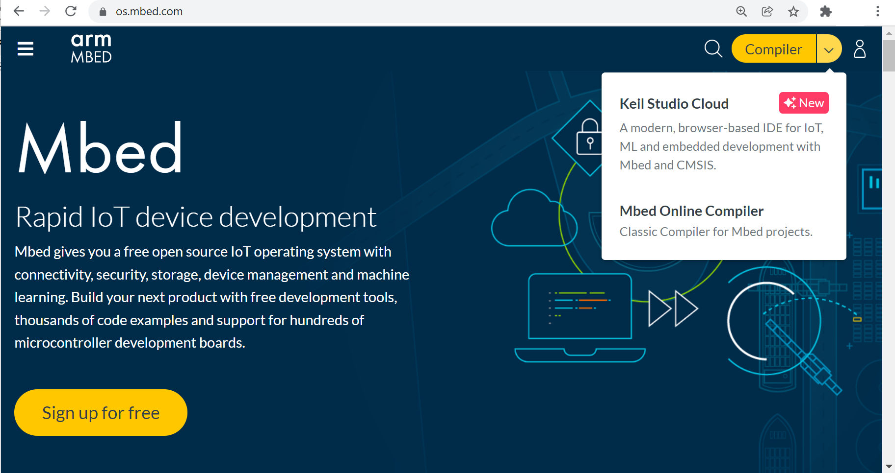
รูปภาพ: ซอฟต์แวร์สำหรับ Mbed OS และใช้งานแบบออนไลน์
เมื่อเข้าสู่หน้า Workspace Management ของ Mbed Online Compiler มีขั้นตอนดังนี้
- สร้างโปรแกรมใหม่ (โปรเจกต์ใหม่) สำหรับ Program Workspace > My Programs
- เลือกบอร์ดที่จะใช้งาน (Select Platform) สามารถเลือกได้จากหน้าเว็บ https://os.mbed.com/platforms/
แล้วกดปุ่ม Select Platform เช่น เลือกบอร์ด
NUCLEO-F466RE - ตั้งชื่อโปรแกรม (Program Name) เช่น ตั้งชื่อว่า
NUCLEO_LED_BLINK - เลือก Template สำหรับโปรแกรม ให้เป็น "Empty Program"
- เลือกบอร์ดที่จะใช้งาน (Select Platform) สามารถเลือกได้จากหน้าเว็บ https://os.mbed.com/platforms/
แล้วกดปุ่ม Select Platform เช่น เลือกบอร์ด
- สร้างไฟล์ใหม่ (New File) สำหรับเขียนโค้ดอย่างน้อยหนึ่งไฟล์
เช่น
main.cppให้เป็นส่วนหนึ่งของโปรแกรม - นำเข้าไลบรารี (Import Library) ของ Mbed OS จาก Github
- เพิ่มไฟล์
mbed_app.jsonเพื่อกำหนดค่าต่าง ๆ สำหรับการทำงานของโปรแกรม - ทำขั้นตอน Build Only เพื่อคอมไพล์โค้ดของโปรแกรม เมื่อคอมไพล์ได้สำเร็จแล้ว ให้ทำคำสั่ง Compile จะได้ไฟล์ .bin สำหรับดาวน์โหลดมายังคอมพิวเตอร์ของผู้ใช้
ข้อสังเกต: เราสามารถใช้ Mbed Online Compiler เพื่อสร้างโปรเจกต์ใหม่บนหน้าเว็บเบราว์เซอร์ ทดลองเขียนโค้ด นำเข้าไลบรารีมาใช้ คอมไพล์ให้เป็นไฟล์ไบนารี แล้วนำไปใช้กับบอร์ดไมโครคอนโทรลเลอร์เป้าหมายได้ แต่ไม่สามารถจำลองการงานหรือดีบักโค้ดได้ และไม่รองรับการใช้งาน WebUSB
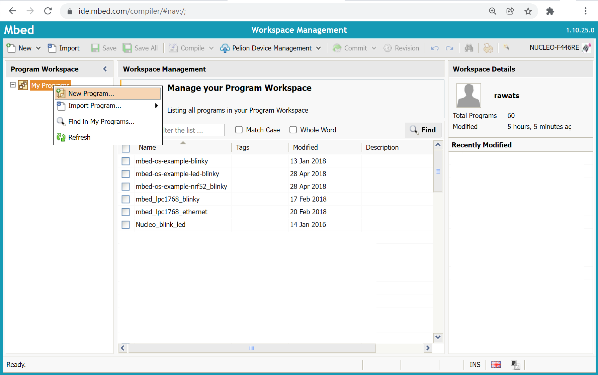
รูปภาพ: เข้าสู่ Workspace Management > Program Workspace แล้วสร้างโปรแกรมใหม่ (New Program...)
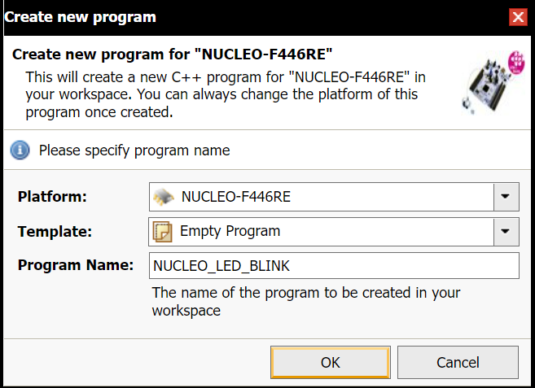
รูปภาพ: กำหนดค่าสำหรับการสร้างโปรแกรมใหม่
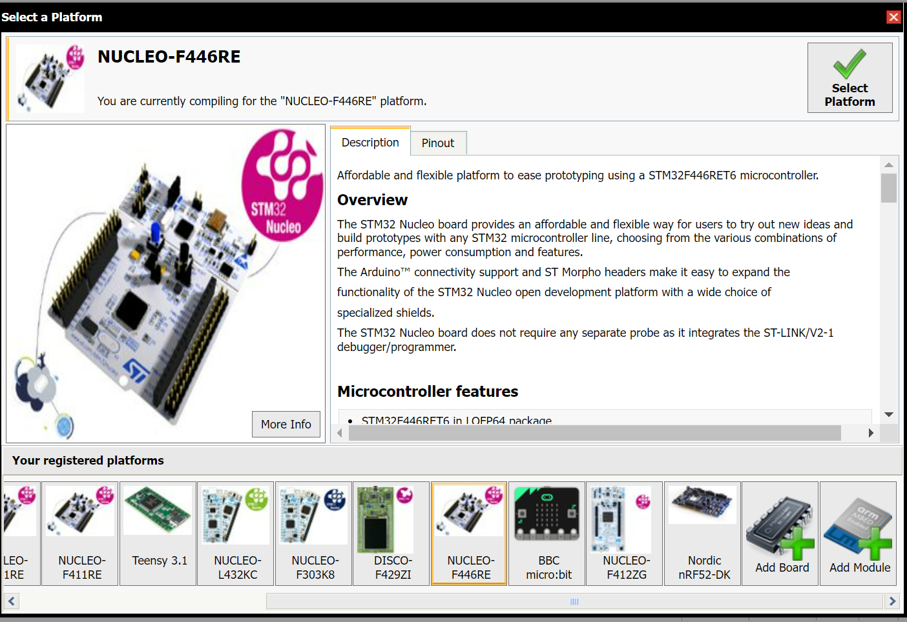
รูปภาพ: เลือกบอร์ดที่จะใช้งาน (Select Platform) จากรายการ หรือค้นหาเพิ่ม (Add Board) ในหน้าเว็บ https://os.mbed.com/platforms/
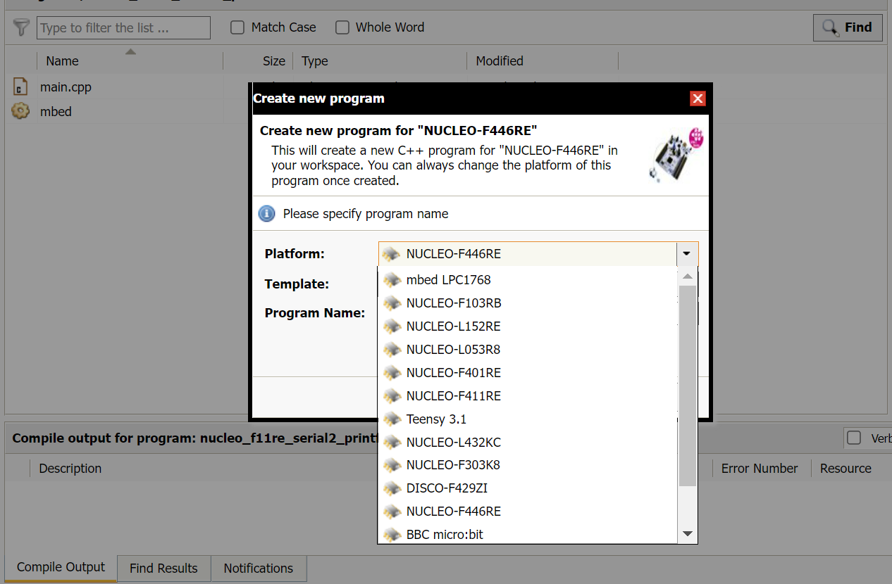
รูปภาพ: เลือกหรือเปลี่ยนบอร์ดที่จะใช้งานได้ เช่น บอร์ด NUCLEO-F446RE
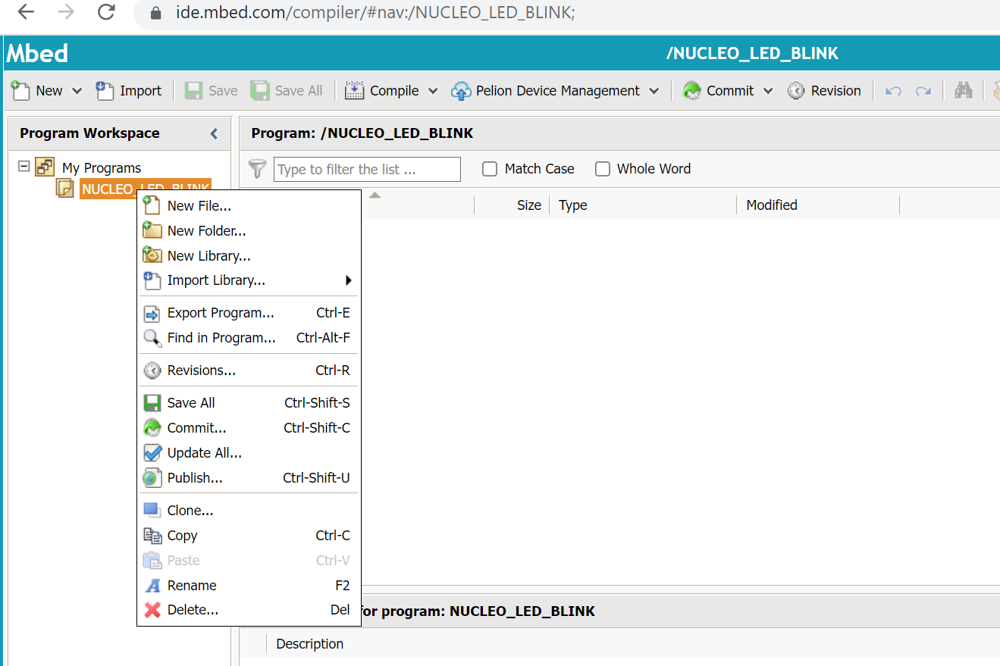
รูปภาพ: สร้างไฟล์ใหม่ (New File)
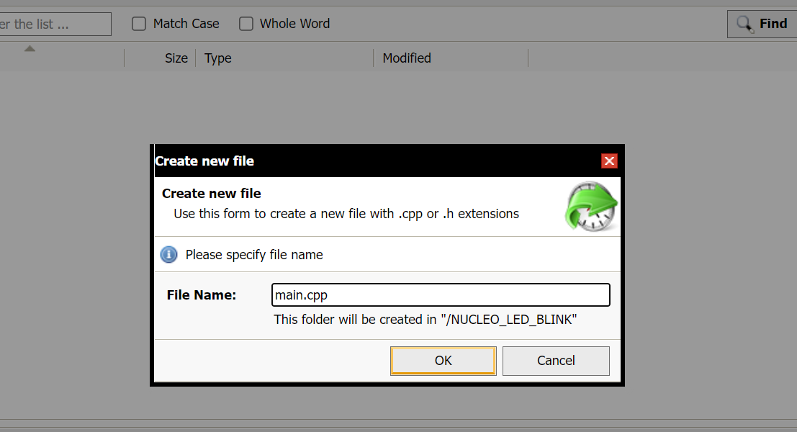
รูปภาพ: สร้างไฟล์ main.cpp สำหรับโปรแกรมใหม่
โค้ดตัวอย่างสำหรับไฟล์ main.cpp
#include "mbed.h"
DigitalOut led(LED1);
int main() {
printf( "Mbed OS 6 Demo - Nucleo LED Blink\n" );
printf( "Mbed OS version %d.%d.%d\n",
MBED_MAJOR_VERSION,
MBED_MINOR_VERSION,
MBED_PATCH_VERSION );
while(1) {
led = !led;
ThisThread::sleep_for(500ms);
}
}
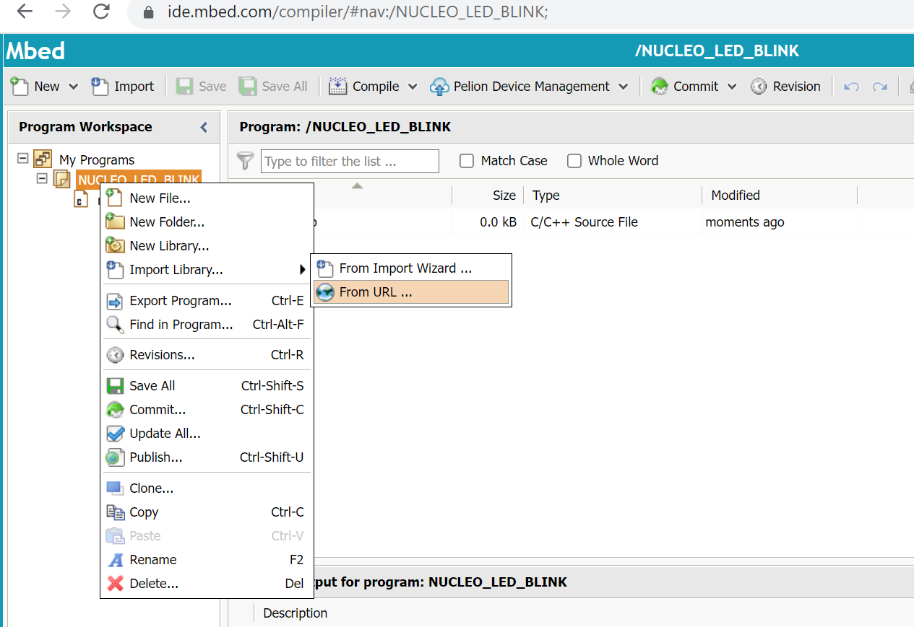
รูปภาพ: นำเข้าไลบรารี (Import Library) โดยระบุ URL ของ Mbed OS
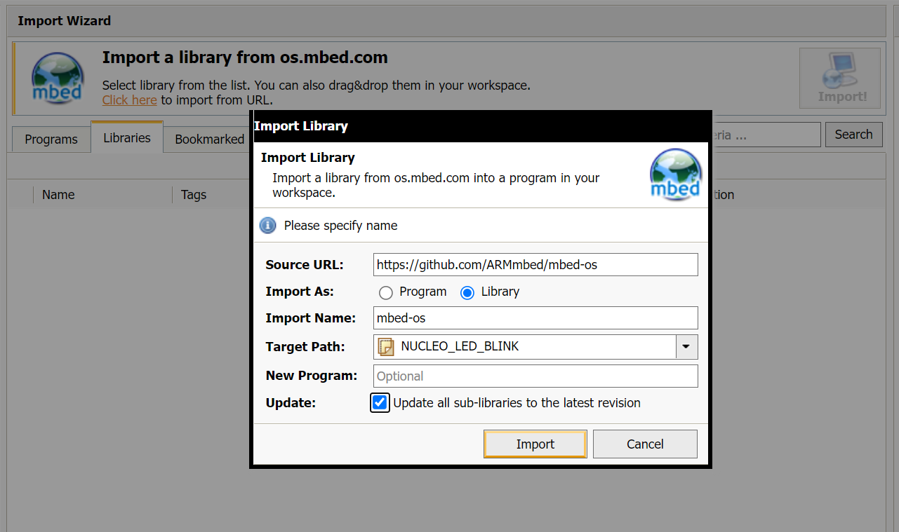
รูปภาพ: กดปุ่ม Import เพื่อนำเข้าไลบรารี mbed-osจาก Github
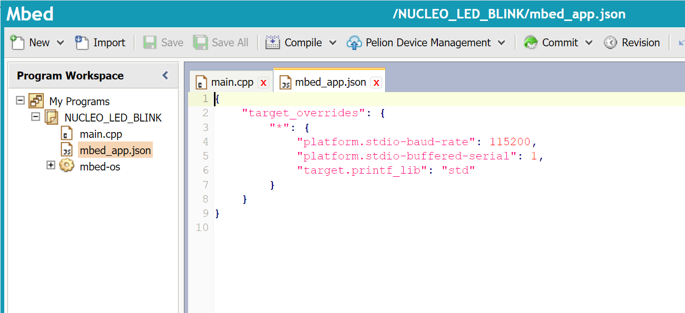
รูปภาพ: การเพิ่มไฟล์ mbed_app.json และตัวอย่างการกำหนดค่าเพื่อใช้สำหรับโปรแกรม
ตัวอย่างไฟล์สำหรับ mbed_app.json
{
"target_overrides": {
"*": {
"platform.stdio-baud-rate": 115200,
"platform.stdio-buffered-serial": 1,
"target.printf_lib": "std"
}
}
}
ถัดไปให้ทำขั้นตอน Compile > Build Only สำหรับโปรแกรมตัวอย่าง
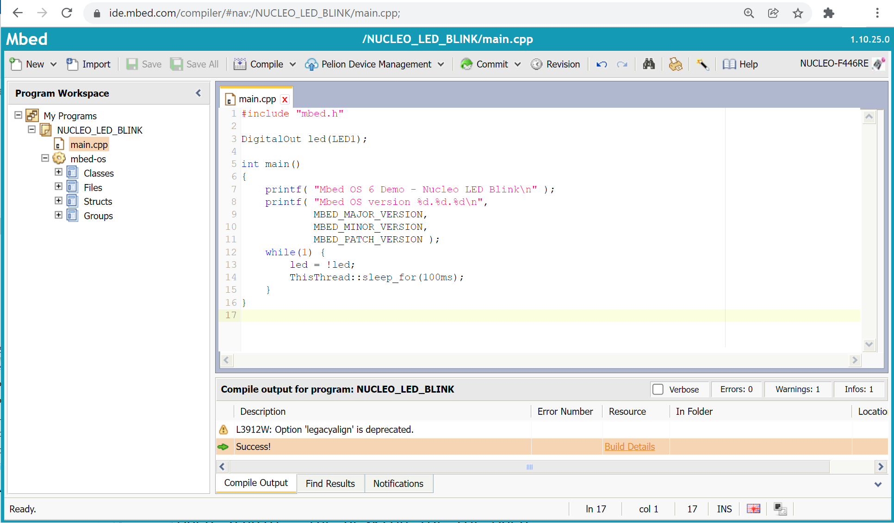
รูปภาพ: แก้ไขโค้ดตามตัวอย่างและทำขั้นตอน Build Only เพื่อคอมไพล์โค้ด
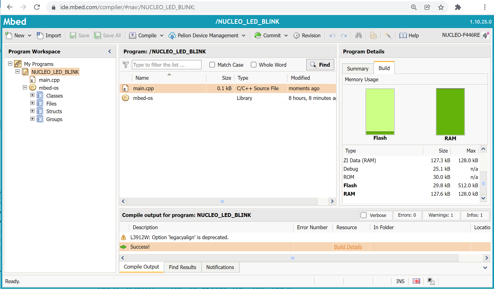
รูปภาพ: ดูผลการคอมไพล์โค้ดในส่วนของ Program Details เช่น ขนาดของหน่วยความจำ SRAM และ Flash ของโปรแกรมที่ได้
▷ การนำไฟล์ออกไปใช้งานกับ Mbed Studio IDE#
หากต้องการนำไปใช้งานกับซอฟต์แวร์อื่น ก็ให้คลิกเลือกโปรแกรมจากรายการที่มีอยู่ใน Program Workspace > My Programs แล้วทำคำสั่ง Export ซึ่งจะมีรายการให้เลือกว่า ต้องการนำไปใช้กับซอฟต์แวร์ใดได้บ้าง เช่น Keil MDK / uVision IDE หรือ Makefile หรือ CMake สำหรับ GNU Arm toolchain เป็นต้น
ถ้ดไปเราจะลองนำไฟล์ของโปรแกรมตัวอย่าง NUCLEO_LED_BLINK
ไปใช้กับ Mbed Studio IDE (Desktop) เวอร์ชัน Windows โดยเลือกเป็นไฟล์แบบ Archive (.zip)
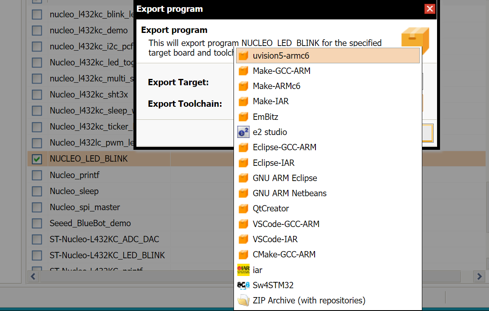
รูปภาพ: ตัวเลือกสำหรับการนำออก (Export) สำหรับไฟล์ของโปรเจกต์ใน Mbed Online IDE
เมื่อได้ดาวน์โหลดไฟล์ .zip มายังเครื่องคอมพิวเตอร์ของผู้ใช้แล้ว ให้ทำขั้นตอนดังนี้
- แตกไฟล์ออกในไดเรกทอรีใหม่
- เปิดโปรแกรม Mbed Studio IDE (ถ้าได้เคยดาวน์โหลดและติดตั้งไว้ใช้งานเรียบร้อยแล้ว)
- ทำคำสั่งจากเมนู File > Open Workspace ให้เลือกไดเรกทอรีที่ได้จากการแตกไฟล์ .zip
- อัปเดตไลบรารีต่าง ๆ ที่เกี่ยวข้องกับโปรแกรม เช่น
mbed-osใน Libraries Tab - ทำขั้นตอน Build โดยเลือกโปรไฟล์เป็น Debug
- เชื่อมต่อบอร์ดไมโครคอนโทรลเลอร์ที่ได้เลือกใช้งาน และกดปุ่ม Run Program เพื่ออัปโหลดไฟล์ .bin ไปยังบอร์ดทดลอง หรือกดปุ่ม Debug Program ถ้าต้องการดีบักการทำงานของโค้ดโดยใช้ฮาร์ดแวร์
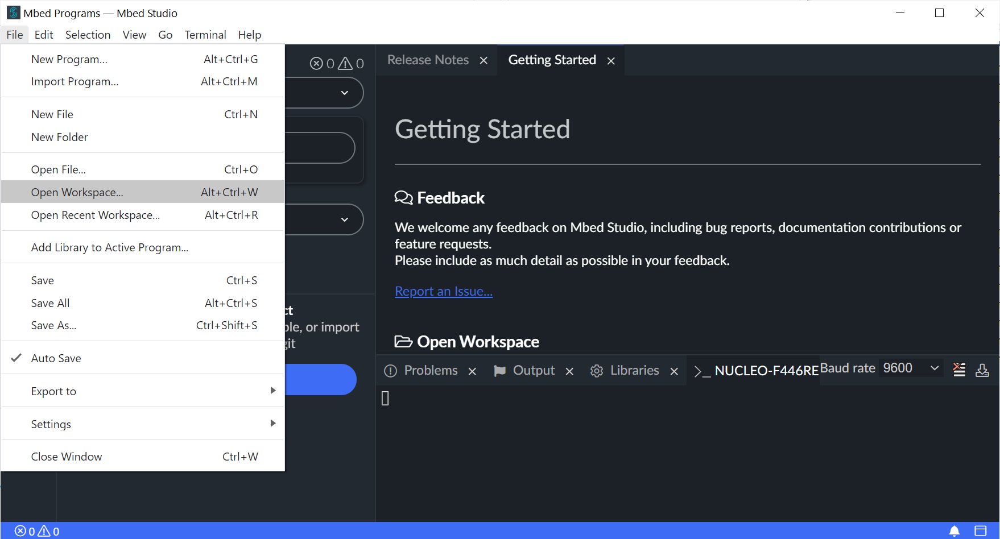
รูปภาพ: เลือกไดเรกทอรีของโปรแกรมที่ได้ดาวน์โหลดมา เพื่อเปิดใน Workspace ของผู้ใช้
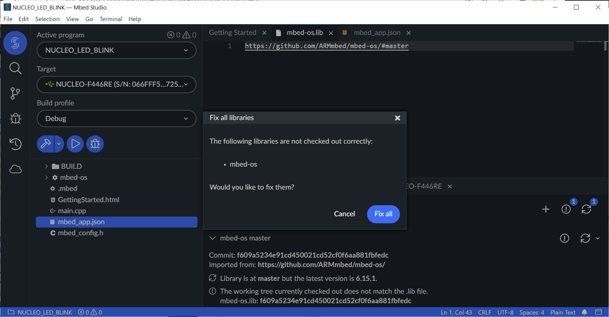
รูปภาพ: อัปเดตไลบรารีสำหรับ mbed-os จาก Github ใน Libraries Tab
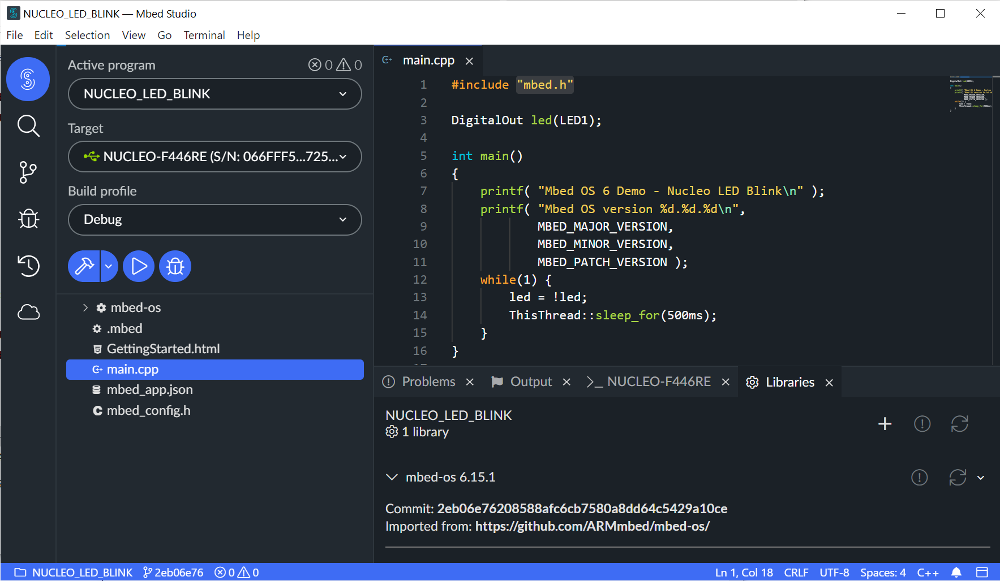
รูปภาพ: เมื่อได้อัปเดตไลบรารี mbed-os ให้เป็นเวอร์ชันล่าสุดแล้ว ให้ทำขั้นตอนBuild program
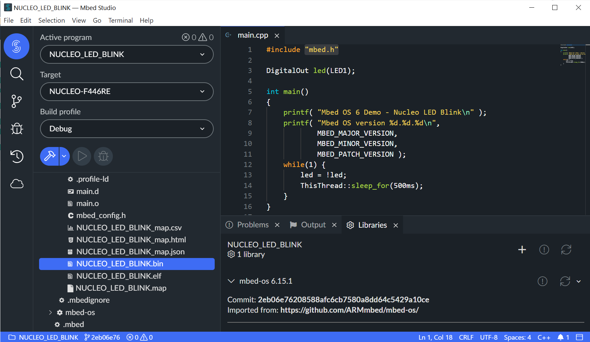
รูปภาพ: เมื่อทำขั้นตอน Build program ได้สำเร็จ และมีการสร้างไฟล์ .bin ของโปรแกรม
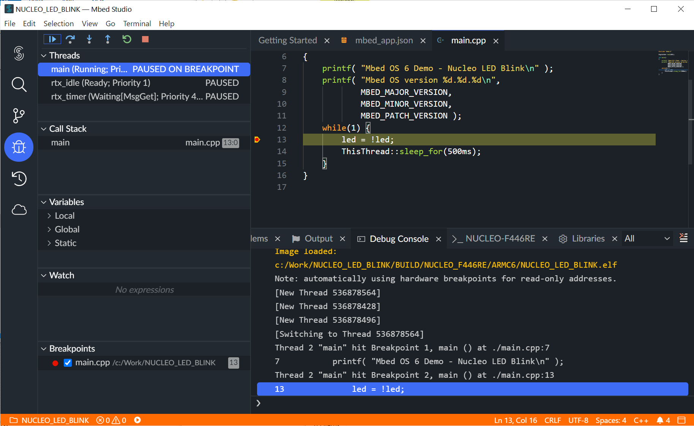
รูปภาพ: เมื่อทำขั้นตอน Run Debug ในขณะที่เชื่อมต่อกับบอร์ดทดลอง ผู้ใช้สามารถกำหนดต่ำแหน่งของ Breadpoints ในโค้ดได้
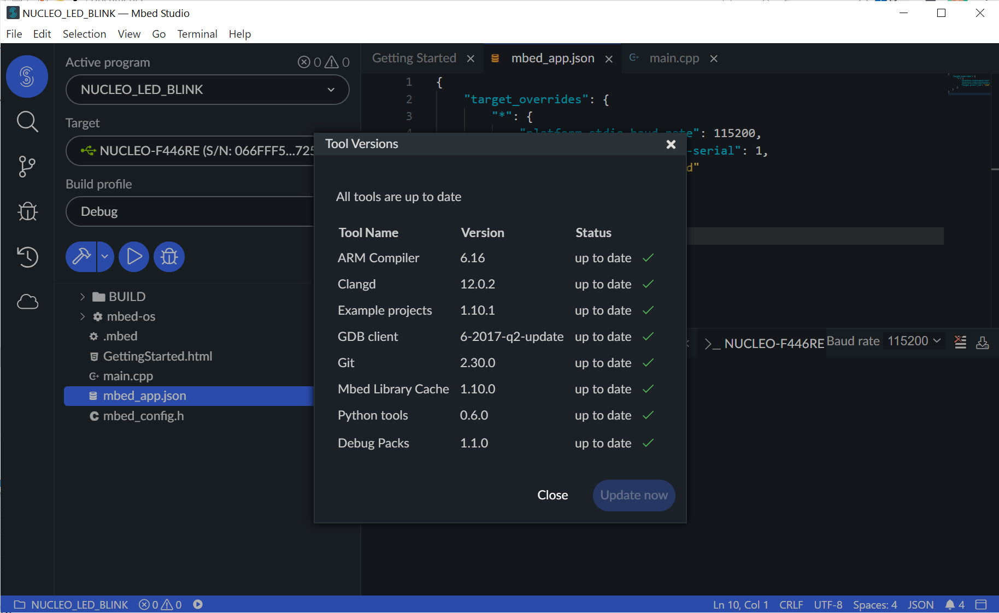
รูปภาพ: ดูเวอร์ชันของโปรแกรมต่าง ๆ ของ Mbed Studio IDE ที่ได้นำมาใช้งาน
▷ กล่าวสรุป#
ในบทความนี้ เราได้เห็นขั้นตอนการใช้งานซอฟต์วแวร์ Mbed Online Compiler และการนำไฟล์ออกมาเพื่อนำไปใช้กับ Mbed Studio IDE ทำให้สามารถนำโปรแกรมที่ได้ไปทดลองกับบอร์ดไมโครคอนโทรลเลอร์ และรองรับการดีบักโค้ดในฮาร์ดแวร์เพื่อทดสอบการทำงานของโปรแกรม
This work is licensed under a Creative Commons Attribution-ShareAlike 4.0 International License.
Created: 2021-11-30 | Last Updated: 2022-11-03